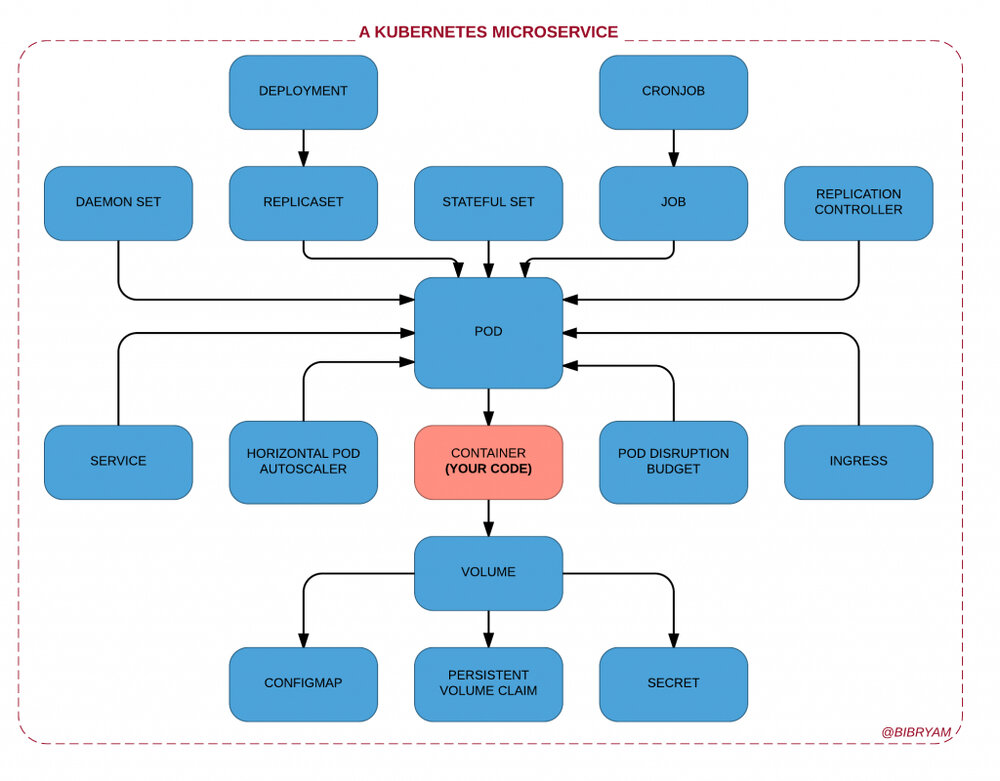
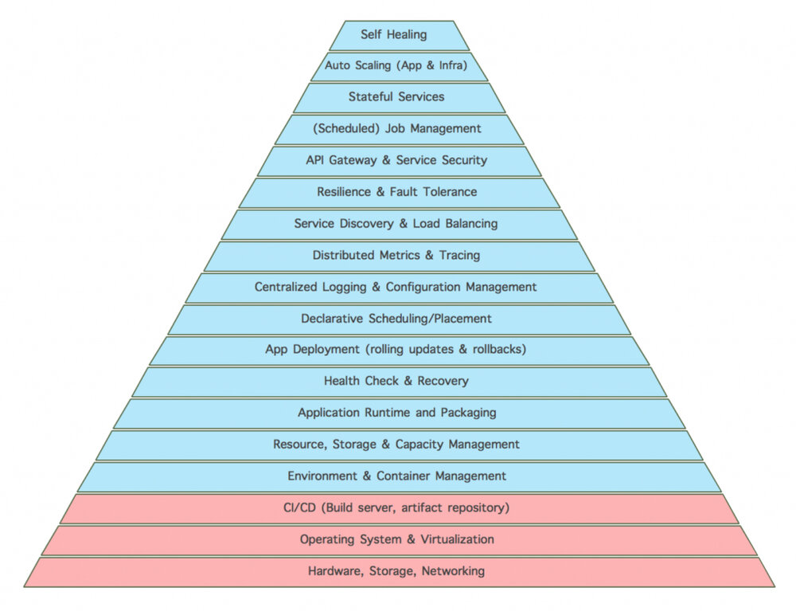
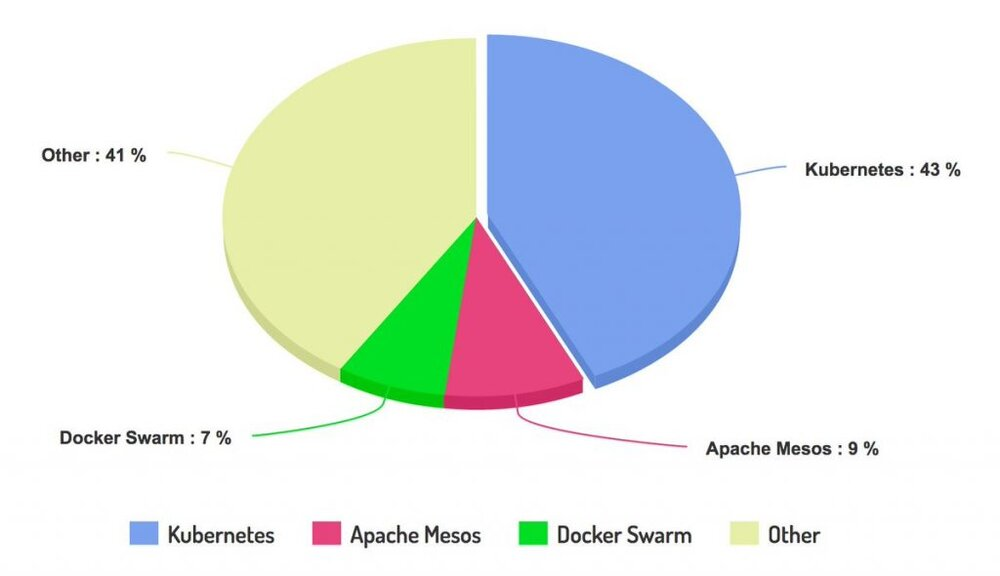

本文为翻译文章，点击查看原文。
本文最初发表于2017年5月24日。
随着大量新平台和支持工具的出现，云原生势头正在增长。 这些新平台为开发人员提供了越来越多的功能 ，可以以自动化的方式快速开发，部署和管理大量微服务。
但这种云原生的势头的增长同样会伴随着成本的增加，最好做好为此付出代价的准备。
最近我写了一篇由Kubernetes等云原生平台提供的“为开发者准备的新的分布式原语”，以及这些原语如何与开发应用程序的编程原语相结合。 例如，下面看看开发人员必须了解和使用多少 Kubernetes 概念才能有效地运行单个容器化应用程序：

请记住，此图表不包含DevOps团队的Ops部门必须管理的支持Kubernetes的对象。在操作之前也不需要额外的应用程序支持工具（用于日志管理、监控、跟踪、服务网格等）。
更有可能的是，开发人员必须编写与容器中的应用程序代码相同数量的YAML代码。 更重要的是，应用程序本身将依赖于比以往更多的平台。云原生应用程序期望平台执行运行状况检查、部署、放置、服务发现、运行定时任务（ cron 作业）或调度原子工作单元（作业）、自动扩展、配置管理等。
因此，您的应用程序已放弃并将所有这些职责委托给平台，并期望以可靠的方式处理它们。 事实上，现在您的应用程序和相关团队在很多不同的级别上依赖于平台：代码、设计、体系结构、开发实践、部署和交付管道、支持过程、恢复方案，你能想到的一切。
在生态系统上下注而不是在平台上
上图显示了代码在Kubernetes微服务环境中的小巧程度。 但是，当我们谈论基于生产就绪的微服务系统时，这种情况远未完成。 任何规模庞大的系统都需要集中监控、度量收集、跟踪、服务网格、集成构建和部署工具、管道等工具。

该平台只是冰山一角，为了在云原生世界取得成功，您需要成为完全集成的工具和公司生态系统的一部分。因此，赌注绝不是单一平台、项目、很酷的库或一家公司。它涉及整个协同工作的整个项目生态系统，以及在未来十年左右合作并致力于该事业的公司（供应商和客户）的整个生态系统。 我认为这两个方面同样重要：
- 技术 ：考虑到向云原生过渡是一个多年的旅程，只有长期成功才能带来好处，重要的是打赌有可能在未来5到10年内发展的技术，而不是从过去5到10年的历史。
- 文化 ：cloud-native是通过微服务、容器、持续交付和DevOps的组合实现的。而成为云原生需要的不仅仅是为您的应用程序添加少量依赖项/库（也不是在某些会议中如何推广它）。您可能不得不改变团队结构和固定流程、工作习惯和编码实践，并习惯于消耗仍然非常活跃的技术空间。如果您的公司文化在某种程度上更接近于开发或仅使用云原生平台和相关工具的公司的文化，那就更容易了。诸如提出拉取请求与提交错误报告，检查上游源代码以及为即将推出的新功能打开讨论之类的小事情。 文化一致性和人文因素与技术优势同等重要。
以下内容并不代表完整的格局，但我将尝试将我想到的主要云原生生态系统分组：
Mesosphere和Apache Mesos
作为Apache Software Foundations的一部分，Apache Mesos 有优势（成熟的社区）也有缺点（进度缓慢）。 它诞生于2009年左右，是一个成熟的框架，它最近增加了对容器（我的意思是docker格式）和类似概念（如Pod/Task组）的支持。
Cloud Foundry和Spring Cloud
Cloud Foundry诞生于2009年左右，是云原生世界的先驱之一。当 Spring Cloud与Cloud Foundry一起使用时， 该平台与应用程序本身融为一体。 服务发现、负载平衡、配置管理、重试、超时等一系列功能在服务中执行（在本例中为JVM）。这是Kubernetes等平台所采取的相反方法，其中所有这些职责都委托给平台或其他支持容器（例如 [envoy](https://lyft.github.io/envoy/、linkerd 、traefik ）。 我在过去比较过Kubernetes 和 Spring Cloud（请注意，不是的Cloud Foundry） 。
AWS ECS和Docker Swarm
在Docker公司仍然需要搞清楚它是要开发什么，卖什么，亚马逊创造了使用Docker技术作为一部分一个非常坚实的产品 ECS 。带有Blox的 ECS（AWS的开源容器编排软件）本身可能不是什么大事，但当与所有其他AWS产品结合使用时，它是一个功能非常强大的集成平台。
更不用说从虚拟机时代起成为AWS支持者的Netflix正在向容器领域过渡 ，并正在推动Amazon ECS的创新。
CNCF和Kubernetes
Kubernetes是此类别中最新的平台之一，但同时也是有史以来最活跃，发展最快的开源项目之一。 与整合的 云原生计算基金会项目 和支持公司相结合 ，使整个生态系统成为这一类别中非常有力的竞争者。
作为一个后来者（2014年），Kuebernetes的优势在于从一开始就以容器为中心的架构发展。 而且它基于一个已有十年历史的Google Borg，这意味着原则（不是实施）是成熟的，并在最高级别测试。

Sysdig 2017年Docker使用报告中的容器编排
正如您可以 从Sysdig 最近的 报告中 看到的结果 ，云原生用户似乎很欣赏这一切。
选择哪一个？
也许您在想，只要您将应用程序打包到容器中，就可以轻松地跨不同的云原生平台移植。你错了。无论您是从Mesos、Cloud Foundry、Kubernetes、Docker Swarm还是ECS开始，您都必须投入大量资金来学习平台和支持工具，了解文化和工作方式，并与这个仍然快速变化的生态系统的技术和公司进行互动。
本文的目的不是要比较这些生态系统，而是要显示它们之间的差异，并证明如果需要，它将需要大量的时间和金钱来输入，或转移到另一个生态系统。
Kubernetes作为应用程序可移植层
云原生态系统在技术、流程和文化方面非常独特。 但它们之间也有一些整合。许多由一个平台推广的概念也在向其他平台传播。 例如，部署单元（Pod in Kubernetes）的概念现在出现在Mesos中，它也作为任务组存在于Amazon ECS中。服务器端负载平衡（Kubernetes中的服务）和带有策略的调度/放置（Kubernetes Scheduler）的概念也存在于Docker Swarm、AWS ECS等中。但这是它走多远，从一个生态系统过渡到另外，需要付出很多努力。
那么如何避免与单一供应商锁定？ 一种方法是坚持使用Kubernetes并接受它作为云和服务提供商之间的可移植性层。Kubernetes如此受欢迎的原因之一是它不是单一的公司玩具，而是由多家大型科技公司支持，如谷歌、红帽（ 现被 IBM 收购【译者注】）、Docker，Mesosphere、IBM、戴尔、思科等等。
另一个原因是有许多云公司提供Kubernetes作为服务。 如果您使用Kubernetes，那么您可以通过第三方服务提供商以最小的努力在Google容器引擎，Microsoft Azure、IBM Bluemix容器服务等云提供商之间移动您的应用程序，甚至可以在AWS上移动您的应用程序。 这意味着Kubernetes API是云平台之间应用程序的可移植性层，而不仅仅是容器。一个容器本身就是云原生海洋中的一滴。
关于作者
Bilgin Ibryam （@bibryam）是 Red Hat 的首席架构师、提交者和 ASF 成员。 他是一名开源布道师，博客作者，《Camel Design Patterns》 和 《Kubernetes Patterns》 书籍的作者。 在他的日常工作中，Bilgin 喜欢指导编码和领导开发人员成功构建云原生解决方案。 他目前的工作重点是应用程序集成、分布式系统、消息传递、微服务、devops 和一般的云原生挑战。 你可以在 Twitter、Linkedin 或他的 博客 上找到他 。